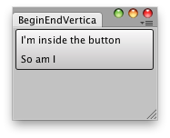

EditorGUILayout.EndVertical
public static void EndVertical();
Description 描述
Close a group started with BeginVertical.
See Also: EditorGUILayout.BeginVertical

Vertical Compound group.
// Create a Vertical Compound Button using UnityEngine; using UnityEditor;
public class EndVerticalCS : EditorWindow { [MenuItem("Examples/Begin-End Vertical usage")] static void Init() { EditorWindow window = GetWindow(typeof(EndVerticalCS)); window.Show(); }
void OnGUI() { Rect r = EditorGUILayout.BeginVertical("Button"); if (GUI.Button(r, GUIContent.none)) Debug.Log("Go here"); GUILayout.Label("I'm inside the button"); GUILayout.Label("So am I"); EditorGUILayout.EndVertical(); } }